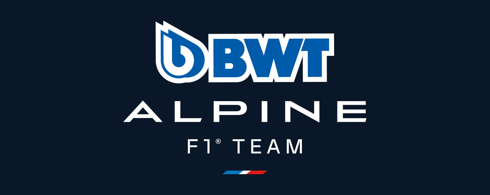
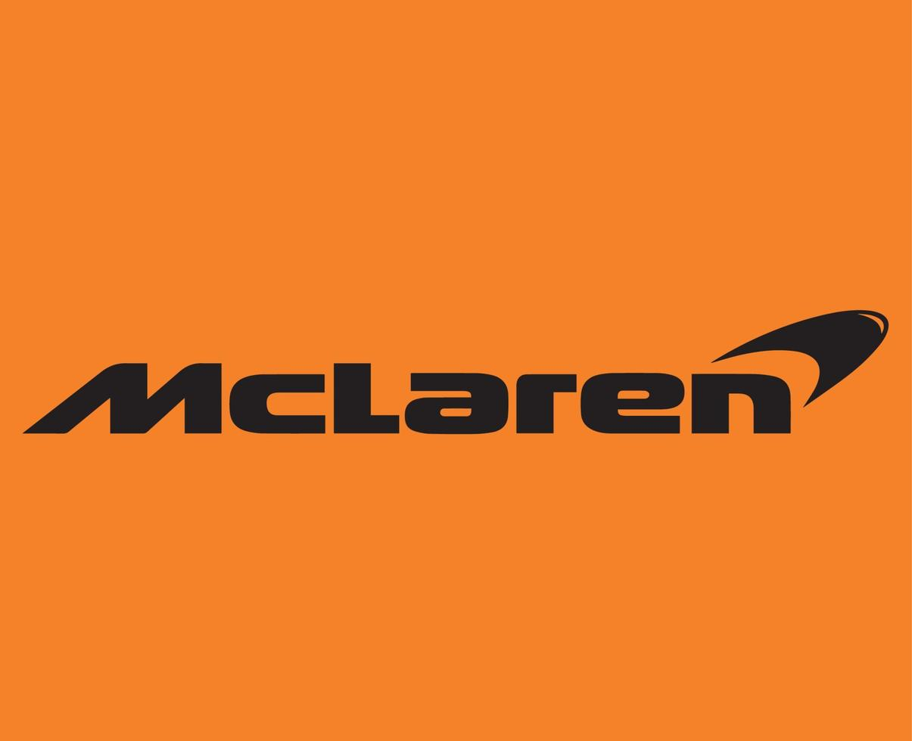
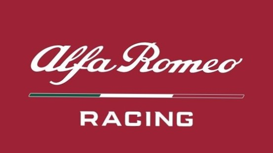
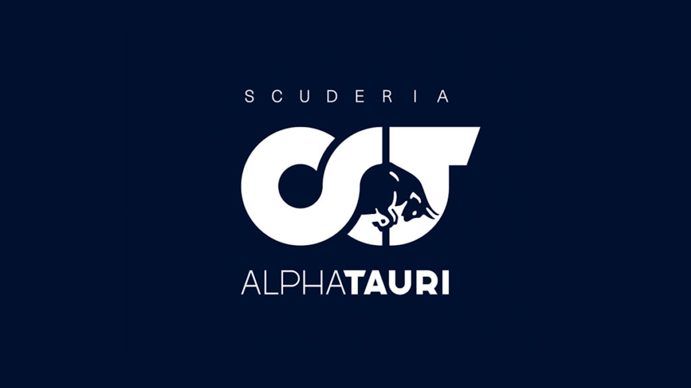
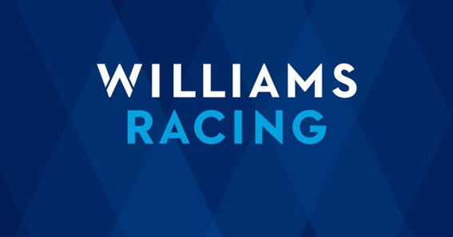

A Red Bull entrou na Fórmula 1 em 2005 e rapidamente se tornou uma equipe de destaque. Eles conquistaram
quatro títulos de construtores consecutivos entre 2010 e 2013, com Sebastian Vettel ganhando quatro campeonatos
mundiais seguidos nesse período. Além disso, a equipe conquistou um Mundial de construtores em 2022 e dois
Mundiais de pilotos com o holandês Max Verstappen em 2021 e 2022 A equipe é conhecida por sua abordagem
inovadora, estratégias agressivas e promoção de jovens talentos. Eles têm uma base de fãs leais e continuam a
competir no mais alto nível da Fórmula 1, buscando mais sucesso e títulos.
Pilotos: Max Verstappen (NED) e Sérgio Pérez (MEX)
País de origem: Áustria
Fundador: Dietrich Mateschitz
Chefe de equipe: Christian Horner
Títulos de Construtores: 5
Scuderia Ferrari
A Ferrari é uma das equipes mais emblemáticas e bem-sucedidas da história da Fórmula 1. Desde sua estreia em
1950, a equipe construiu uma história de sucesso, conquistando inúmeros títulos de pilotos e construtores. A
Ferrari se destacou nos anos 1950 com pilotos como Alberto Ascari e Juan Manuel Fangio, e continuou a acumular
sucesso ao longo das décadas seguintes. Durante os anos 2000, a equipe viveu seu auge com Michael Schumacher,
conquistando cinco títulos consecutivos de pilotos e seis títulos consecutivos de construtores. Além de seu
sucesso nas pistas, a Ferrari se tornou um ícone do automobilismo, conhecida por sua paixão, tradição e legião
de fãs ao redor do mundo. Seus carros vermelhos distintivos são um símbolo de prestígio e excelência.
Apesar de enfrentar desafios em certos períodos, a Ferrari continua sendo uma força importante na Fórmula 1, com
uma base de fãs dedicada e um lugar único na história do esporte. Sua participação na categoria é sempre
aguardada com grande entusiasmo, e a equipe continua a perseguir a busca por mais títulos e sucesso na Fórmula
1.
Pilotos: Charles Leclerc (MON) e Carlos Sainz (ESP)
País de origem: Itália
Fundador: Enzo Ferrari
Chefe de equipe: Frédéric Vasseur
Títulos de Construtores: 16
Mercedes-AMG Petronas
A Mercedes tem uma história de sucesso na Fórmula 1, com uma entrada inicial nos anos 1950 e um retorno
notável em 2010. Desde então, eles se tornaram uma das equipes mais dominantes da categoria. Após competir com
carros lendários na década de 1950, a Mercedes voltou em grande estilo como a equipe Mercedes-AMG Petronas
Formula One em 2010. Desde então, eles conquistaram oito títulos consecutivos de construtores e sete títulos
mundiais de pilotos com Lewis Hamilton. A Mercedes é conhecida por sua abordagem técnica inovadora e
investimentos em pesquisa e desenvolvimento. Eles têm sido líderes em termos de desempenho e confiabilidade,
buscando constantemente a excelência na pista. Além disso, a Mercedes tem demonstrado comprometimento com
tecnologias sustentáveis, participando de projetos como a Fórmula E. A história da Mercedes na Fórmula 1 é
marcada por vitórias, conquistas e um compromisso constante em estar no topo. Eles continuam a ser uma força
dominante na categoria, buscando adicionar mais títulos ao seu legado de sucesso na Fórmula 1.
Pilotos: Lewis Hamilton (GBR) e George Russell (GBR)
País de origem: Alemanha
Fundadores: Karl Benz e Gottlieb Daimler
Chefe de equipe: Toto Wolff
Títulos de Construtores: 8
BWT Alpine

A Alpine é uma equipe relativamente nova na Fórmula 1, tendo estreado em 2021. Ela surgiu a partir da
histórica marca francesa de carros esportivos e de corrida. A Alpine teve sucesso no passado, especialmente em
competições de rally, mas sua participação na Fórmula 1 começou recentemente. Em 2021, a equipe foi renomeada
como Alpine F1 Team, refletindo uma nova fase da marca como uma divisão esportiva da Renault. Embora sua
história na Fórmula 1 seja curta, a Alpine está determinada a competir em alto nível e alcançar sucesso na
categoria. Com base em sua herança automobilística e tecnologia avançada, a Alpine busca crescer e se tornar uma
força competitiva na Fórmula 1. O futuro da equipe está repleto de desafios e ambições, e eles estão prontos
para escrever sua própria história na categoria máxima do automobilismo.
Pilotos: Esteban Ocon (FRA) e Pierre Gasly (FRA)
País de origem: França
Fundador: Renault
Chefe de equipe: Laurent Rossi
Títulos de Construtores: 2
McLaren

A McLaren é uma equipe icônica da Fórmula 1, fundada em 1963 por Bruce McLaren. Após conquistar
campeonatos na década de 1970, a equipe viveu uma era dourada nos anos 1980 em parceria com a Honda, dominando a
categoria. Pilotos lendários como Niki Lauda, Alain Prost e Ayrton Senna fizeram história com a McLaren. Após a
era da McLaren-Honda, a equipe teve altos e baixos, mas sempre buscou retornar ao topo. Com parcerias
subsequentes, como a Mercedes-Benz, a McLaren conquistou mais títulos e continua competindo entre os melhores
times da Fórmula 1. Sua tradição de excelência, inovação e uma base sólida de fãs em todo o mundo são marcas
registradas da equipe.
Pilotos: Lando Norris (GBR) e Oscar Piastri (AUS)
País de origem: Reino
Unido
Fundador: Bruce McLaren
Chefe de equipe: Zak Brown
Titulos de Construtores:
8
Alfa Romeo Racing

A Alfa Romeo tem uma história rica na Fórmula 1. A equipe estreou em 1950 e foi dominante nos primeiros
anos, conquistando dois títulos mundiais. Após um período de ausência, a Alfa Romeo retornou em 1979 como
fornecedora de motores. Em 2018, a equipe voltou oficialmente como Alfa Romeo Racing. Desde então, a equipe tem
competido como parte do meio do pelotão e busca melhorar seu desempenho. A Alfa Romeo tem uma parceria com a
Ferrari e compartilha recursos técnicos. Sua presença na Fórmula 1 representa a tradição italiana e a busca por
sucesso na categoria.
Pilotos: Valtteri Bottas (FIN) e Guanyu Zhou (CHI)
País de origem: Itália
Fundador: Nicola Romeo
Chefe de equipe: Alessandro Alunni Bravi
Titulos de
Construtores: 0
Aston Martin
A Aston Martin tem uma história intermitente na Fórmula 1, mas retornou à categoria em 2021 após mais de
60 anos. A equipe Racing Point foi renomeada como Aston Martin Cognizant Formula One Team. Em 2021, a equipe de
Fórmula 1 Racing Point foi renomeada como Aston Martin Cognizant Formula One Team. A mudança foi um retorno da
marca ao esporte após um hiato de mais de 60 anos. A Aston Martin está determinada a competir no mais alto nível
da Fórmula 1 e se tornar uma força competitiva. A Aston Martin está empenhada em competir no mais alto nível e
se tornar uma força competitiva. Com o apoio da empresa-mãe e uma nova visão estratégica, eles buscam sucesso e
desejam trazer a renomada marca britânica de luxo para os holofotes da Fórmula 1.
Pilotos: Fernando
Alonso (ESP) e Lance Stroll (CAN)
País de origem: Reino Unido
Fundador: Lawrence Stroll
Chefe de equipe: Mike Krack
Titulos de Construtores: 0
HAAS
A Haas F1 Team é uma equipe relativamente nova na Fórmula 1, tendo feito sua estreia na temporada de
2016. A equipe foi fundada pelo empresário americano Gene Haas, fundador da Haas Automation, uma empresa de
máquinas CNC. A Haas F1 Team é uma equipe nova na Fórmula 1, fundada em 2016 pelo empresário Gene Haas. Eles
adotaram uma abordagem única ao formar uma parceria técnica com a Ferrari. Em sua estreia, eles marcaram pontos
e mostraram resultados sólidos. No entanto, enfrentaram desafios como uma equipe independente. A Haas continua a
competir na Fórmula 1, buscando melhorar sua posição no grid e alcançar sucesso a longo prazo.
Pilotos:
Kevin Magnussen (DEN) e Nico Hulkenberg (GER)
País de origem: Estados Unidos
Fundador: Gene
Haas
Chefe de equipe: Guenter Steiner
Titulos de Construtores: 0
Scuderia AlphaTauri

A AlphaTauri é uma equipe de Fórmula 1 associada à Red Bull Racing. Fundada em 2006 como Toro Rosso, a
equipe tem como objetivo principal desenvolver jovens pilotos e promover talentos para a equipe principal. Em
2020, passou por uma mudança de nome e identidade para AlphaTauri, refletindo a expansão da marca de moda da Red
Bull. Embora não esteja entre as equipes de ponta, a AlphaTauri tem obtido resultados notáveis ao longo dos anos
e desempenha um papel importante no desenvolvimento de jovens talentos na Fórmula 1. A equipe desempenha um
papel importante no desenvolvimento de jovens pilotos e tem contribuído para o sucesso de muitos talentos
emergentes na Fórmula 1. A AlphaTauri permanece comprometida em competir no mais alto nível e desafiar os
limites da categoria
Pilotos: Yuki Tsunoda (JAP) e Nyck deVries (HOL)
País de origem: Itália
Fundador: RedBull Racing
Chefe de equipe: Franz Tost
Titulos de Construtores: 0
Williams Racing

A Williams é uma equipe icônica da Fórmula 1, fundada em 1977 por Frank Williams e Patrick Head. Após
enfrentar dificuldades financeiras iniciais, a equipe se destacou nos anos 1980 e 1990, conquistando vários
campeonatos mundiais. Durante essa época, a Williams teve parcerias bem-sucedidas com a Renault e contou com
pilotos talentosos como Nigel Mansell, Alain Prost, Damon Hill e Jacques Villeneuve. Eles dominaram a categoria,
conquistando nove títulos de construtores e sete títulos de pilotos consecutivos. Nos últimos anos, a equipe
passou por altos e baixos, mas continua buscando retornar ao sucesso com uma nova geração de pilotos e uma
determinação inabalável. A Williams é conhecida por sua história de perseverança e competitividade na Fórmula 1.